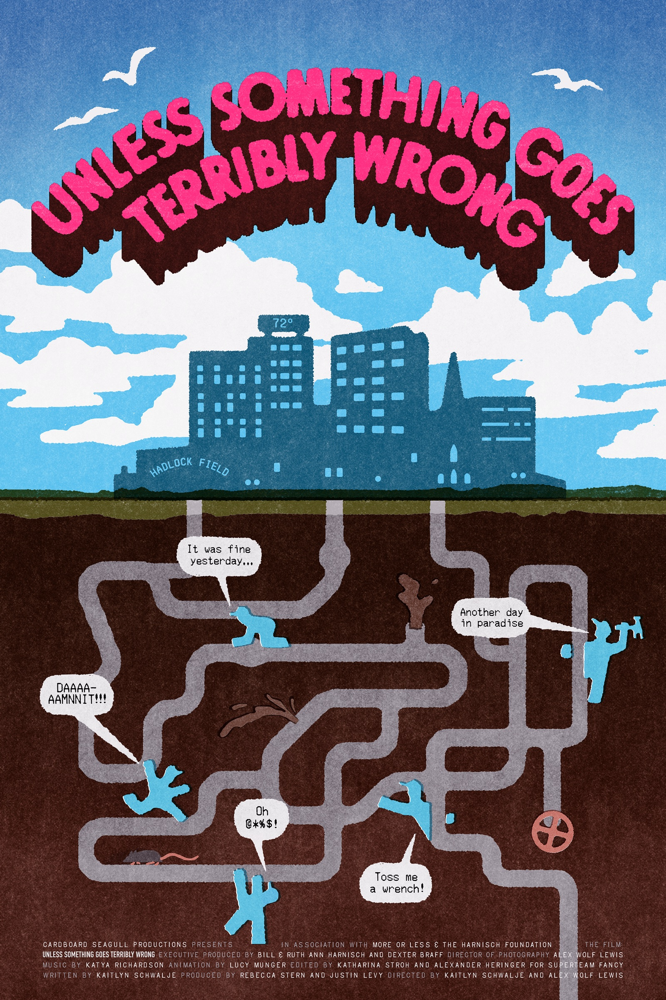

Kaitlyn Schwalje & Alex Wolf Lewis
Tuesday, October 13 at 7 PM
PURCHASE TICKETS

Wastewater plants across the country are in need of resuscitation. Half a century after the Clean Water Act radically improved how we handle our sewage, our once modern facilities have aged beyond their intended lifespans. Pipes are cracking and growing populations push plants to their limits. The threats are mounting but the infrastructure hasn’t changed. And, just when it seems things couldn’t get any worse, a cancer causing-contaminant (PFAS) enters the scene and threatens to collapse the entire house of cards. In response, one plant that can’t afford to ever shut down, must find clever solutions to an ever-growing mountain of problems.
Over the course of one calendar year, we follow the day-to-day operations of one wastewater facility and the funny, close-knit, and inventive individuals working to keep it all running. There’s Dustin, Gollum impersonator and self-professed nerd, who heads the place. With a quick wit he keeps the crew smiling as the plant chugs along. There’s Zac – artist and tattooed gentle giant, Dustin’s best friend and number two in charge who over the course of the year absorbs the mounting pressures faced by the plant. And lastly Jimmy, the youngest member of the team. Under Dustin’s guidance, Jimmy hopes to overcome test anxiety and pass his entry level operators exam. On a daily basis, the team laughs and struggles in a plant that looks like a movie set with labyrinths of pipes and blinking panels.
Unless Something Goes Terribly Wrong is a buddy comedy about poop and the thankless pursuit of making a better world.
***
Return to Washington Baths
Over the course of one calendar year, we follow the day-to-day operations of one wastewater facility and the funny, close-knit, and inventive individuals working to keep it all running. There’s Dustin, Gollum impersonator and self-professed nerd, who heads the place. With a quick wit he keeps the crew smiling as the plant chugs along. There’s Zac – artist and tattooed gentle giant, Dustin’s best friend and number two in charge who over the course of the year absorbs the mounting pressures faced by the plant. And lastly Jimmy, the youngest member of the team. Under Dustin’s guidance, Jimmy hopes to overcome test anxiety and pass his entry level operators exam. On a daily basis, the team laughs and struggles in a plant that looks like a movie set with labyrinths of pipes and blinking panels.
Unless Something Goes Terribly Wrong is a buddy comedy about poop and the thankless pursuit of making a better world.
***
Return to Washington Baths